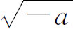
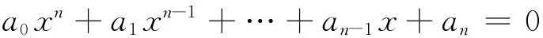
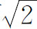
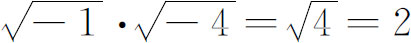
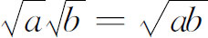
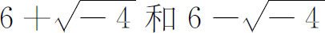
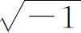
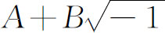
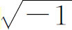
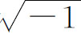

1．数系的状况
虽然在18世纪时很难把代数和分析互相区别开来，因为极限概念的深刻含义在当时依然是模糊的，但是按照我们现代的观点，把这两个活动领域分开还是合适的。17世纪的时候，代数是人们兴趣的一个重要中心；但到了18世纪，它变成从属于分析，而且除了数论以外，促进代数研究的因素，大部分来自分析。
因为代数的基础是数系，所以让我们先来看一下数系发展的状况。在1700年左右，我们所熟悉的数系的所有成员——整数、分数、无理数、负数和复数——都已被人们熟知了。但是，在整个这世纪中，都有人反对更新类型的数。典型的是英国数学家马塞尔（Baron Francis Masères，1731—1824）的反对意见，他是剑桥大学克莱尔（Clare）学院的研究员和皇家学会会员。正是这位写过一些有价值的数学论文和有关人寿保险理论的实质性论文的马塞尔在1759年发表了《专论在代数中使用负号》（Dissertation on the Use of the Negative Sign in Algebra）。他说明如何避开负数（除了要表示从较小的数减去较大的数所得的差以外），尤其是避开方程的负根，他把二次方程仔细分类，使得有负根的方程单独进行考虑；当然，负根必须舍去。对于三次方程他也同样处理。然后他说到负根：
……就我所能判断的而言，它们只会把方程的整个理论搞糊涂，而且把一些就其本质说来是出奇地明显简单的东西搞得晦涩难懂、玄妙莫测……因此很希望代数里决不容许有负根，或者说再一次把它们从代数里驱逐出去。因为如果这样做了，那么就有很好的理由去设想，那些现在被许多知识渊博、机敏过人的人用来进行代数运算的、模糊不清并和一些几乎是不能理解的概念纠缠在一起的东西，从此将从代数中清除掉，一定会使代数（或普遍的算术），就其本性而言，在简洁明了和证明能力方面成为不亚于几何的一门科学。
确实直到现代，负数才算被真正透彻地理解了。在18世纪后半叶，欧拉仍然深信负数比∞大。他还论证（-1）·（-1）＝＋1说，这个乘积必定是＋1或者-1，但因为1·（-1）＝-1，所以（-1）·（-1）＝＋1。著名的法国几何学家卡诺认为，负数的使用导致谬误的结论。在1831年这样晚的时候，伦敦大学学院的数学教授、著名的数理逻辑学家、对代数有贡献的德摩根（1806—1871）在他的《论数学的研究和困难》（On the Study and Difficulties of Mathematics）中说：“虚数式

和负数式-b有一种相似之处，即只要它们中的任一个作为问题的解出现，就说明一定有某种矛盾或谬误。只要一涉及实际的含义，两者都是同样的虚构，因为0-a和同样是不可思议的。”德摩根举一个问题来解释他的话。父亲56岁，他的儿子29岁，问什么时候父亲的岁数将是儿子的2倍？他解方程56＋x＝2（29＋x），得x＝-2。因此他说，这个结果是荒唐的。接着他又说，但是，如果把x换成-x，解方程56-x＝2（29-x），我们就得到x＝2。他总结道，由于最初问题的提法是错误的，所以导致了不能接受的负答数。德摩根固执地认为考虑比0小的数是荒谬的。
18世纪时，虽然在弄清楚无理数概念方面没有什么成就，但是对无理数本身还是做出了某些进展。1737年，欧拉基本上证明了e和e2是无理数，兰伯特证明了π是无理数（第20章第6节）。由于要求圆的面积，大大地刺激了对π的无理性的研究。勒让德猜测说π可能不是有理系数方程的根，他的猜测导致了无理数的分类。任何有理系数代数（多项式）方程的任何一个根（不管是实的还是复的）叫做一个代数数。这样，方程

的根叫做代数数，其中ai是有理数。因此，所有的有理数和一部分无理数是代数数，这是因为任一有理数c是方程x-c＝0的根，而

是x2-2＝0的根。不是代数数的数叫做超越数，因为欧拉说过：“它们超越了代数方法的能力。”欧拉至少早在1744年就认识到了代数数与超越数之间的这一差别。他猜测说，以有理数为底的有理数的对数，必定或者是有理数，或者是超越数。然而，18世纪时还不知道有哪一个数是超越数，因而证明超越数存在的问题仍旧没有解决。对于18世纪的数学家来说，复数更是一个祸根。这些数自从被卡丹（Jerome Cardan）引进之后，直到1700年实际上还无人理睬。后来（第19章第3节）用部分分式法求积分时用到了复数，随之就产生了关于复数以及负数和复数的对数的冗长的论争。尽管欧拉正确地解决了复数的对数问题，但是无论是他还是别的数学家，对这些数都是不清楚的。
欧拉试图理解复数究竟是什么，在他的《对代数的完整的介绍》（Vollständige Anleitung zur Algebra，这本书1768年至1769年在俄国第一次出版，1800年在德国出版，是18世纪最好的一本代数教科书）中说：
因为所有可以想象的数都或者比0大，或者比0小，或者等于0，所以很清楚，负数的平方根不能包括在可能的数［实数］中。从而我们必须说它们是不可能的数。然而这种情况使我们得到这样一种数的概念，它们就其本性说来是不可能的数，因而通常叫做虚数或者幻想中的数，因为它们只存在于想象之中。
欧拉在使用复数时犯了错误。在这本《代数》中他写道：

，因为
。他还给出ii＝0.2078795763，但遗漏了这个量的其他数值。他最初是在1746年给哥德巴赫的一封信中，而后在1749年一篇谈莱布尼茨和约翰·伯努利之间争论的文章中（第19章第3节）给出了这个数值。虽然欧拉把复数叫做不可能的数，但他说它们是有用的。他心目中的用处发生在当我们着手处理一个不知道是否有解的问题的时候。例如，如果要把12分成两部分，使它们的乘积等于40，我们就会得到这两部分是
。他说，从而我们认识到这个问题是不能解出的。除了欧拉作出的关于复数的对数的正确结论以外，复数的研究确实前进了几步，但是它们在18世纪的影响是有限的。在沃利斯的书《代数》（Algebra，1685，第66-69章）中，他说明怎样几何地表示实系数二次方程的复根。沃利斯说，实际上，复数并不比负数更不合理，而且因为负数能在直线上表示出来，所以在平面上表示复数也应该是可能的。他从画一条轴出发，根据一个实数与原点的关系在轴上把这个实数标出来，在这条轴上到原点的距离表示根的实部，根据实部的正或负，这个距离分别在轴的正方向或负方向上量出来。过实轴上这样定出的这一点，作一条垂直于实轴的直线，它的长度就表示与

相乘的那个数，即给出了根的虚部，这条直线根据这个数的正负分别在不同的方向画出（他没有引进y轴本身作为虚轴）。接着，沃利斯作出了方程ax2＋bx＋c＝0的根都是实根和都是复根时的几何图像。他的这项工作是正确的，但是对于其他用途来说，它不是x＋iy的一个有用的表示形式。18世纪时还有一些人试图用别的方法几何地表示复数，但这些方法的用途不广泛。当时还没有一个几何表示形式使复数更能被人接受。18世纪初期，大多数数学家都相信，不同的复数根将会引进不同类型或不同阶的复数，都相信可能存在理想的根，这些根的性质他们还不能详细说明，但大概可以设法把它们算出来。但是达朗贝尔在他的得奖著作《关于风的一般成因的考虑》（Réflexions sur la cause générale des vents，1747）中断言：每一个由复数经过代数运算（他把取任意次幂包括在内）建立起来的式子都是一个形为

的复数。在证明这个结论的过程中他遇到的一个困难是（a＋bi）g＋hi的情形。他关于这个结论的证明还必须经过欧拉、拉格朗日和其他人的修补。在《百科全书》中，达朗贝尔一反常态，对复数保持了沉默。在整个18世纪中，复数的卓有成效的应用已足以使数学家对它们建立起一些信心（第19章第3节；第27章第2节）。不管什么地方，在数学推理的中间步骤中用了复数，结果都被证明是正确的，这个事实产生了有力的反响。当然还存在一些怀疑，怀疑推理的可靠性，甚至常常怀疑结论的正确性。
1799年高斯对代数基本定理作出了他的第一个证明，而因为这必须依赖于对复数的承认，所以高斯就巩固了复数的地位。后来，19世纪勇敢地带着复值函数向前冲。但是，即使在复函数论在流体动力学中发展了并应用了好长一段时间之后，剑桥大学的教授们仍然保持“一种对讨厌的

抱不可动摇的厌恶心理，采用笨办法去杜绝它的出现，或用之于一切可能的地方”。甚至到了1831年那样晚的时候，人们对复数的普遍看法还可以从德摩根的著作《论数学的研究和困难》中了解到。他说他这本书把当时牛津和剑桥使用的最好的书本中的一切东西都包揽无遗。谈到复数，他说：
我们已经证明了记号是没有意义的，或者甚至是自相矛盾或荒唐可笑的。然而通过这些记号，代数中极其有用的一部分便建立起来了。它依赖于一件必须用经验来检验的事实，即代数的一般规则可以应用于这些式子［复数］，而不会导致任何错误的结果。要把这个性质求助于经验，那是与本书开头写下的一些最重要的原理相违背的。我们不能否认实际情况确是这样，但是必须想到这只不过是一门很大的学科中的一个小小的和孤立的部分。对于这门学科的其余一切分支，这些原理将完整地得到应用。
上文中的“原理”，他指的是数学真理应该由公理经过演绎推理得出来。
接着，他把负根和复根加以比较：
于是，在负的结果和虚的结果之间就有截然的区别。当一个问题的答案是负的时候，在产生这个结果的方程里变换一下x的符号，我们就可以或者发现形成那个方程的方法有错误，或者证明问题的提法太局限，因而可以扩展，使之容许一个令人满意的答案。但当一个问题的答案是虚的时候，情形就不是这样了……对于支持和反对这种问题（如用负的量等）的所有论据，我们不赞成采用完全介入的办法来阻止学生的进步，这些论据他们不能理解，而且论据本身在两方面都无确定结果；但是学生也许会意识到困难确实存在，这些困难的性质可以给他们指明，然后他们也许会通过充分多的（分类处理的）例子的考虑，而相信法则所引向的结果。
在德摩根写这番话的时候，人们正在弄清楚复数和复函数的概念。但是新知识的传播是缓慢的。确实，整个18世纪和19世纪上半叶都在热烈地争论着复数的意义。约翰·伯努利、达朗贝尔和欧拉的所有论点都被不断地改头换面重复出现。甚至20世纪的三角教科书也通过不包含

的证明，补充介绍了应用复数的材料。这里我们注意到另外一点，它的重要性与它的简洁性几乎成反比。根据简洁性，它可以叙述如下：18世纪时没有人为实数系和复数系的逻辑操心。欧几里得在《原本》第Ⅴ卷中为建立不可通约量的性质而曾作过的说明被漠视了。产生这种漠视的部分解释是：因为那种说明依赖于几何，而18世纪时，算术与代数已经独立于几何了。其次，这种逻辑的发展即使适当地修改一下使它能从几何中解脱出来，也不能建立起负数和复数的逻辑基础，而这也可以使数学家们断绝任何想要严密地建立数系的企图。最后，该世纪主要关心的是在科学中使用数学，而且因为运算法则（至少对实数来说）直观上是可靠的，所以没有一个人真正地担心数系的基础。典型的例子是达朗贝尔在《百科全书》中关于负数的条目里所说的一段话。这一条目写得一点儿也不清楚，他下结论道：“对负数进行运算的代数法则，任何一个人都是赞同的，并认为是正确的，不管我们对这些量有什么看法。”各种类型的数从来没有合适地介绍给社会，然而在18世纪的数学界却争得了一个比较稳固的地位。